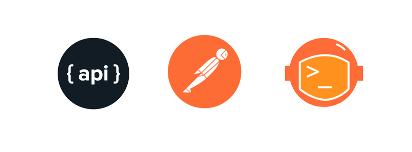
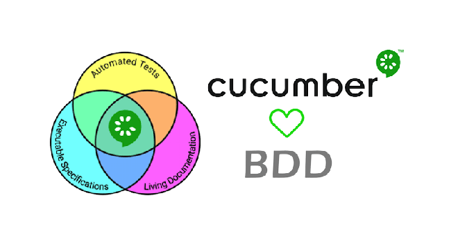
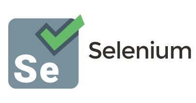
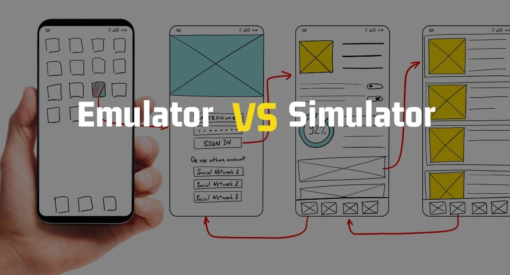

de Oliveira
SENIOR SOFTWARE TEST ENGINEER - S.Q.A.
ABOUT ME
Senior Software Tester and Automation Engineer, polyglot (English, Spanish, Portuguese, currently learning German – A2, Italian – A1, and French – A1). I am a QA Engineer with over 23 years of experience in quality (since 2003), including 14 years in IT software projects (since 2012) and 6 years dedicated to test automation engineering and management (since 2020).
My background includes test planning, risk management, microservices integration assessments, and participation in 100+ technology projects and solution go‑lives, contributing across interregional and global environments.
I have collaborated with companies in a wide range web solutions and Microservices accross any sectors, such as:
-Medical, Finance, Banking,
-Automabilistics, BI, Factories,
-Logistics, Posts, e-commerce,
-Enterprises tools, and Supply Chain.
Technical Expertise
Experienced with:
JIRA, Xray, Zephyr, HP ALM, Azure DevOps, API Testing, Postman, Talend, BDD, Gherkin, Cucumber, Java, Selenium, Playwright, Robot Framework, Python, JavaScript, Cypress, Docker, Jenkins, GitHub Actions, Dynatrace, Agile and Scrum methodologies.
Professional Values
Integrity, resilience, and continuous improvement are key principles that guide my career and the way I drive quality in every project.
Industry Experience
I have had the privilege to work as a trusted partner for major companies, including:
Swiss Post, Johnson & Johnson, Volkswagen Group, Citibank, Hexagon Mining, Diebold, among others.
My journey and skill numbers
Projects with my collaboration
Skills (Certifications, courses, and technicals lessons learned)
Professional Experience
My Education
| My skills | Level* | Years of Experience |
|---|---|---|
| SQA and Tester Engineering | Expert | 23 |
| Agile / Scrum Methodologies | Expert | 12 |
| Jira / Confluence – Project Management | Expert | 12 |
| Xray & Zephyr Test Management & Execution Tools (Jira Test Plugin) | Expert | 10 |
| Excel & MS Power BI – for QA Business Analysis for Project Metrics | Expert | 10 |
| Test Automations with Selenium with Java | Senior | 6 |
| GitHub Actions and Jenkins for Test automation | Senior | 6 |
| Test Automations with Robot framework, Selenium | Senior | 3 |
| Test Automations with Robot framework, Playwright | Senior | 3 |
| Automation Tests with Cypress | Advanced | 2 |
| Automation Tests with Jest | Advanced | 1 |
| API Tests with Postman | Expert | 5 |
| API Tests with Talend | Advanced | 2 |
| Jmeter for performance checks | Medium | 1 |
* More then 500 specialization trainings.
Projects with my contribution
Software Test Automation studies
Lessons about Agile Methodologies, management and IT people improvements
My teacher Portfolio (Link @ imagens)
- Functional Software tests and QA tools
- Requirements and use case analysis for the creation of Manual Test Plans and Scripts,
Test execution, creation, documentation, and defect management.
Project Unit 1
- Quality Analysis in Projects
com HTML, CSS + JavaScript + NodeJS + Git and GiHub Actions
Project Unit 2


- Projects for unit testing
NodeJS + Jest + CICD with GitHub Actions
Project Unit 3

.png)
- Projects with CICD - QA improvements
CICD with GitHub Actions
Project Unit 4
- Projects for Automated and Exploratory Testing
- Integration Testing for Microservices and Databases | APIs
Postman + Newman + SQL + GitHub Actions (Docker)
Project unit 4


- E2E Test Automations
BDD (Cucumber) + Cypress + Selenium + GitHub Actions
Project Unit 5


- Functional and Integration Test Automations
KeyDriven with Python + Robot Framework + Selenium + GitHub Actions
Project Unit 6
- Exploratory Testing for Mobile Devices
Emulators + Peripheral Analysis + Screen Responsiveness and Adaptability
Project Unit 7

